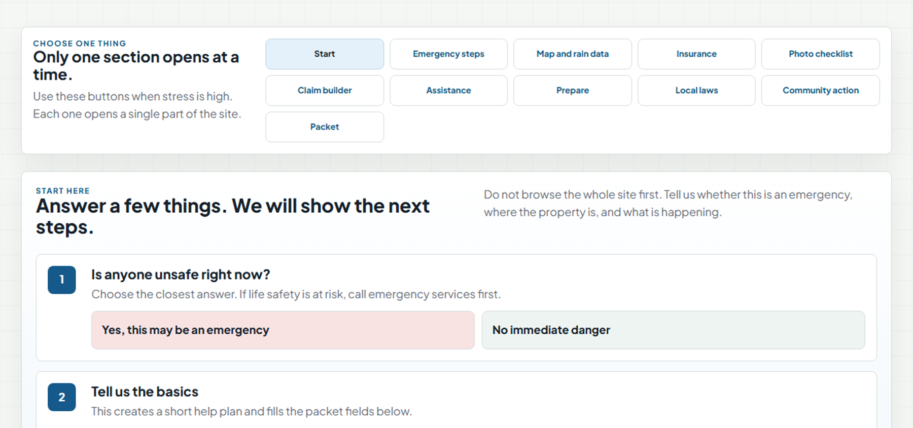

Kaitlyn Head / PG&E Senior GIS Product Designer panel
Macomb Flood Response Platform
A GIS-informed product case showing how I move from stakeholder research to accessible decision support.

Designed to keep residents, responders, utility/GIS teams, and decision makers aligned around evidence and next action.
Product framing
Flood recovery failed at the handoff between risk, evidence, and action.
Residents, responders, GIS analysts, and decision-makers needed different information, but existing systems forced them to piece together maps, claims, assistance, and local rules from disconnected sources.
People had data, but not a shared path for what it meant or what to do next.
Evidence was incomplete, map trust was unclear, and responsibility moved between agencies.
The product connects GIS risk, proof, routing, and packet readiness in one decision-support flow.
Macomb Flood Response Platform
Residents
Operations
GIS trust
Evidence packet
Leadership decisions
Recovery action
30-second summary
The challenge was that flood recovery information lived across maps, agencies, documentation systems, and assistance programs. I identified where trust and decision-making broke down, then designed a GIS-informed recovery platform that translates spatial risk into guided action: what happened, what evidence is needed, and what to do next.
Stakeholder alignment
I separated the roles because each group defines success differently.
Need plain next steps, proof guidance, insurance direction, and a packet they can trust.
Need location, severity, open status, source confidence, and a way to route issues quickly.
Need maintainable layers, timestamps, ownership, accessibility, and data governance.
Need evidence patterns, resource priority, unresolved gaps, and decisions they can explain.
Need role-based workflows, trusted spatial context, and status language that supports action in the field.
Alignment approach
I used a shared evidence model, shared terminology, and shared workflow states so each role could see the same situation without needing the same interface.
Research synthesis
Four insights moved the project from content hub to decision-support product.
I compressed the research into product implications: what each user needed to decide, trust, and hand off.
Proof guidance had to be visible before and during packet creation.
The map had to support triage, not just situational awareness.
Recommendations needed source confidence and missing-data flags.
Layer names, timestamps, ownership, and update paths had to stay visible.
Decision questions
Stakeholder signal
Interpretation
Requirement
Product trace
Residents do not know what counts as proof.
High cognitive load and low claim confidence.
Make proof visible, checkable, and exportable.
Photo checklist, damage inventory, packet readiness.
Operations need location, severity, and current status.
The map must lead to triage, not just awareness.
Pair GIS context with issue routing and status.
Issue router, rain/elevation/FEMA/local layers.
Leadership needs evidence they can explain.
Decisions require traceable source confidence.
Show source, confidence, missing data, and readiness.
Source checks, evidence status, summary packet.
GIS and IT need maintainable data ownership.
Trust fails when sources, timestamps, or governance are unclear.
Make provenance part of the interface.
Layer labels, timestamps, local source references.
Synthesis
The design requirement was not simply more information; it was a guided path where evidence, source trust, and next action stay connected.
User journeys
I mapped stakeholder journeys to locate confusion, delay, and handoff risk.
Stakeholder
Discover
Assess
Document
Route
Recover
Community
What happened?
What counts?
Photos + inventory
Who helps?
Recovery packet
Operations
Incident area
Data confidence
Missing proof
Triage path
Follow-up
Leadership
Where is risk?
Impact pattern
Priority gap
Resource decision
Status brief
GIS / IT
Layer source
Quality issue
Evidence status
Integration risk
Governed update
Product opportunity
The gap appeared in the handoffs between spatial evidence, documentation, routing, and recovery action.
Actual-site benchmark set
I compared real flood, map, safety, and recovery tools against stakeholder needs.
Experience
Heuristic win
Observed gap
Design implication
NWS Flood SafetyGuidance-heavy
Explains before, during, and after flood resources in public language
Weak routing from general guidance to a resident's next local task
Add a task sequence for residents, businesses, and emergency managers
FEMA Flood Map Service CenterMap-heavy
Provides authoritative flood hazard and insurance-map source data
High technical load; unclear action path for proof, claims, or assistance
Pair map layers with next steps for residents, planners, GIS, and leadership
NOAA National Water Prediction ServiceMap-heavy
Shows live hydrologic conditions, forecasts, and inundation context
Strong situational awareness, but not a documentation or recovery workflow
Translate changing risk state into tasks for operations, utilities, and residents
DisasterAssistance.gov / FEMA IAAssistance-heavy
Creates a clear destination for federal recovery assistance
Disconnected from local GIS context, insurance logic, and proof readiness
Connect packet readiness to assistance for residents and businesses
Current fragmented experienceMulti-source baseline
Has source data across agencies, maps, photos, claims, and local offices
Fragmented proof, unclear ownership, and no shared evidence status
Unify evidence status for GIS, IT, responders, utilities, and decision makers
Key takeaway
The opportunity was not to replace official tools. It was to connect risk, documentation, and recovery action into one local workflow.
Key design decisions
The important work was choosing what not to expose all at once.
Guided workflows over an all-at-once portal
Problem: Residents were overwhelmed during high-stress recovery.
Tradeoff: Less immediate flexibility for expert users.
Benefit: Lower cognitive load and clearer next action.
Source confidence inside the interface
Problem: Users questioned whether GIS and assistance data were current enough to trust.
Tradeoff: More metadata and visual complexity.
Benefit: Better trust, auditability, and handoff quality.
Recovery packet as the shared artifact
Problem: Evidence was fragmented across photos, maps, receipts, notes, and agencies.
Tradeoff: More upfront data entry.
Benefit: Cleaner handoffs between residents, insurers, assistance programs, and officials.
Senior design signal
I made the tradeoffs explicit: reduce cognitive load, increase trust, and create a durable handoff artifact.
GIS strategy
The map was not the product. The decision it enabled was the product.
The GIS challenge was translating spatial layers into practical next steps for non-GIS users while keeping expert trust intact.
Regulatory flood context and insurance-map source of truth.
Low points, grade relationship, and property-level vulnerability cues.
Annual, seasonal, monthly, daily, and storm-intensity context.
Drains, rivers, streams, culverts, catch basins, and flow paths.
Sewer capacity, public works context, road closures, and municipal ownership.
What is happening here, why it matters, what to verify, and what action follows.
GIS design principle
Users should not need to be GIS experts to understand why a location is at risk, but expert users still need provenance, timestamps, and source control.
Low-fidelity wireframes
Wireframing one guided recovery flow.
Built around the actual site modules: intake, issue routing, GIS context, proof, assistance, and packet readiness.
Wireframe carousel
01 / Resident intake
01 / 06
MFRHelp planIssueGISPacket
Generated plan
Next best action
SafetyReview now
ProofNeeded
CoverageUnknown
MFRHelp planIssueGISPacket
Step 02
Issue router
Route the resident by need, not by agency structure.
MFRHelp planIssueGISPacket
MFRHelp planIssueGISPacket
Step 04
Coverage logic
Explain likely route, uncertainty, and proof needed without giving legal advice.
Damage type
Water source
Policy route
Proof needed
MFRHelp planIssueGISPacket
Step 05
Proof and inventory
Water line photo
Room damage
Receipt
Policy number
ItemStatusNeeded
Basement wallDraftPhoto
WasherMissingReceipt
MFRHelp planIssueGISPacket
Step 06
Recovery packet
Combine summary, map context, coverage route, photos, inventory, and next steps.
Resident summary
GIS context
Coverage notes
Photo checklist
Inventory CSV
Product style guide
Visual choices had to support trust, urgency, and legibility.
The system uses calm civic colors, plain typography, visible status, and contrast rules that hold up under stress.
Chosen colors
Primary actions, step numbers, map trust cues.
Headings and high-priority text.
Secondary labels and navigation.
Page background and quiet map surface.
Emergency state, never the only cue.
Source, warning, and review cues.
Fonts and H1-H6 scale
Segoe UI / system sans
Primary product UI
H140px / 48Page title
H232px / 40Section title
H324px / 32Module heading
H420px / 28Card title
H516px / 24Field group
H614px / 20Label / status
Contrast checks
Dark text on alert wash, plus label and border.
White text on teal status chip.
Add label, icon, timestamp, or source text.
Should not
Process artifacts
I brought the supporting process artifacts into the walkthrough so the design reasoning is visible.
Four role-based personas with different stress levels, knowledge, and definitions of done.
Official flood, warning, map, and assistance resources used as benchmark context.
Crisis-response language designed to reduce ambiguity and preserve trust.
Rapid divergent concepts narrowed into the decision-flow structure.
Visibility, recognition, match, error prevention, and GIS trust criteria.
Legend language, status patterns, data charts, and visual hierarchy.
Cognitive walkthrough protocol
I test the site by having users complete each journey.
The goal is to see where the product succeeds, where people hesitate, and which issues block the next action.
Choose danger status, enter contact, address, home status, and main problem.
Select flooding now, map data, insurance, claim packet, aid, housing, fixes, laws, or community help.
Review rain, elevation, FEMA flood map, local GIS, drain map, and source checks.
Compare flood insurance, homeowners, sewer backup, aid route, and uncertainty.
Use photo checklist, add damage items, mark pending/verified evidence, and attach receipts.
Review claim summary, assistance checklist, visual proof, CSV inventory, and next steps.
Complete intake -> choose issue -> understand coverage -> add proof -> confirm packet readiness.
Check safety signal -> read GIS context -> inspect evidence status -> route the issue.
Review area pattern -> compare evidence status -> identify unresolved data or resource needs.
Check layer source -> timestamp -> confidence label -> integration or governance issue.
Issue tracking during each step
Success, hesitation, wrong turn, unclear label, map confusion, missing proof, trust concern, severity, quote, design change.
Live product walkthrough
The working product shows how the research and workflow decisions behave in context.
flood-ivory.vercel.app
Live product walkthrough
One recovery flow, from risk to packet readiness.
01Start with the resident's situation, not agency structure.
02Translate map context into plain next steps.
03Package evidence for handoff, review, and recovery.
The live product connects intake, GIS map layers, coverage logic, proof collection, assistance routing, and packet building so the user always knows the next action.
Intake
GIS layers
Coverage
Evidence
Packet
Actual site anatomy
I built the product around connected flood-recovery modules, not a single map.
Safety status, address, home condition, and main problem create a help plan.
Flooding now, map data, insurance, packet, aid, housing, fixes, laws, and community help.
Rain, elevation, FEMA flood maps, local GIS, drain maps, and source checks.
Flood, homeowners, sewer backup, aid route, and damage-area logic.
Photo checklist, upload/review flow, pending suggestions, and verified inventory.
Claim summary, inventory CSV, resident info, assistance checklist, visuals, and receipts.
What works now
The strongest part of my design is how it turns flood complexity into an action sequence.
Spatial risk is connected to documentation, coverage, and recovery steps.
Community, operations, leadership, and GIS/IT needs are visible in the logic.
The product turns scattered proof into a recoverable, reviewable artifact.
The interface avoids making users interpret policy or data alone.
Strategic roadmap
I would sequence the roadmap around trust first, then operational scale.
Show source, timestamp, confidence, missing data, and official-source links for every recommendation.
Separate resident, public works, utility, GIS, leadership, and assistance-provider views while preserving a shared case model.
Low-bandwidth mobile mode, photo capture, offline draft status, issue routing, and crew-ready summaries.
Connect rainfall intensity, elevation, drains, historical reports, and infrastructure capacity to proactive alerts.
Without source confidence, more features would increase uncertainty instead of improving action.
Residents, field teams, GIS analysts, and leadership should not be forced through the same screen.
The product should recommend, flag, and package evidence; accountable experts still decide.
Track task success, packet completeness, routing time, and trust in source data.
Accessibility in high-stress environments
The accessibility problem was operational: people may be stressed, mobile, older, or in the field.
I used WCAG as the baseline, then tested for emergency conditions: low attention, low visibility, small screens, and fast decisions.
Map status cannot depend on color alone; labels and patterns carry meaning.
Forms, cards, and map legends need readable spacing and reflow.
Only one section opens at a time, with clear next action and recovery paths.
Buttons, focus order, upload flows, and status chips must work under pressure.
Component
WCAG check
Risk tested
Design response
Safety intake + formsResident entry
1.3.1, 2.4.6, 3.3.2, 3.3.3
Users may miss required fields or misunderstand emergency choices.
Persistent labels, grouped inputs, clear instructions, and correction guidance.
Map + legendGIS context
1.1.1, 1.4.1, 1.4.3, 1.4.11
Risk could be communicated only by color or dense map symbols.
Text labels, patterned legend, contrast checks, source and timestamp labels.
Status chipsProof, source, readiness
1.4.1, 1.4.3, 3.2.4, 4.1.2
Verified, missing, or needs-review states may be unclear.
Color plus text, consistent naming, role/name/value, non-color status cues.
Photo checklist + inventoryEvidence capture
2.1.1, 2.4.3, 3.3.1, 3.3.4
Users may lose place, upload wrong proof, or submit incomplete evidence.
Keyboard order, visible focus, missing-proof warnings, review before packet.
Recovery packet + modalReview and export
2.1.2, 2.4.7, 2.5.3, 4.1.2
Expanded views, buttons, and exports may trap focus or hide action purpose.
Focus return, no keyboard trap, descriptive button text, accessible dialog labels.
Next audit pass
Run keyboard-only tasks, contrast checks, screen-reader label review, mobile zoom/reflow, and low-bandwidth field capture before handoff.
Measuring success
I would evaluate whether the platform improves decisions, not just whether users like the interface.
Measure issue-routing completion, backtracking, and successful arrival at map, insurance, aid, repair, or packet steps.
Measure percent of packets with photos, water source, location, item value, receipts, source links, and missing-data notes.
Measure source visibility, timestamp comprehension, confidence in GIS layers, and ability to explain the next action.
Measure time to triage, number of duplicate questions, incomplete submissions, and unresolved ownership handoffs.
Validation loop
Observe task behavior, diagnose friction, revise interaction language, then review feasibility with data, engineering, and operational stakeholders.
Transfer to PG&E
The flood domain is the case study; the transferable skill is infrastructure decision design.
Field crews, planners, GIS analysts, engineers, customer operations, emergency response, and leadership.
Map data paired with source, confidence, timestamp, ownership, and actionability.
Verified, missing, outdated, high risk, needs review, and ready for handoff.
Fast scanning, high contrast, keyboard support, mobile reflow, and low-cognitive-load flows.
Keep decision support assistive; experts and data owners remain the source of truth.
PG&E tools should prioritize clarity, speed, accessibility, auditability, and trust over decoration.
Panel close
I can help PG&E turn complex spatial, operational, and infrastructure data into interfaces that crews, analysts, leaders, and customers can trust and act on.
Appendix: research instrument
Survey and interview examples can support deeper follow-up questions.
Tests clarity, confidence, and language.
Tests coordination and status visibility.
Tests briefing quality and decision traceability.
Tests maintainability, ownership, and integration risk.
Appendix: real-site benchmark set
The comparison set used official flood, warning, and recovery resources.
FEMAFlood Map Service Center
Official flood hazard map and product source.
NOAANational Water Prediction ServiceHydrologic forecasts and flood inundation mapping.
NWSFlood SafetySafety guidance, alerts, warnings, and flood education.
FEMADisaster AssistanceFederal assistance entry point after disasters.
NN/g10 Usability HeuristicsEvaluation framework used for H1-H10 scoring.
ProductMacomb Flood Response PlatformWorking product reviewed against the benchmark gaps.